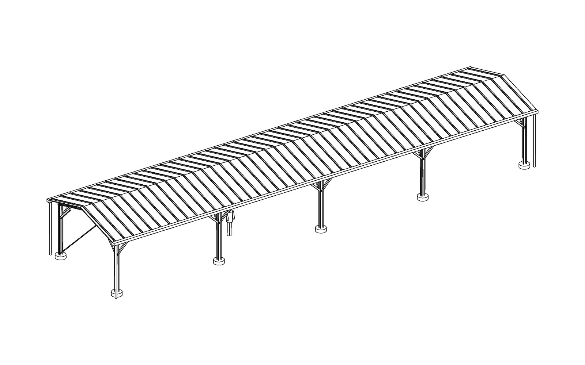

Project title
One or two sentences that say what it is and why it matters.
- Type
- Personal project
- Status
- In progress
- When
- Month Year
- Tools
- Tool, tool, tool
Where this is at: say in one or two sentences how far along the project is.
Define
The problem, in one line
What is the need? Who has it? Write it as something to achieve, not as the thing you plan to build.
Research
What you found out
What already exists? What theory, datasheets or standards set the limits?
Specify
Requirements you can measure
List each requirement with a target number and how you will check it.
| ID | Requirement | Target | How it gets verified | Status |
|---|---|---|---|---|
| R1 | Example requirement | A number | A test | Pending test |
| R2 | Another requirement | A number | A test | Met |
Brainstorm
The options you considered
Option A
What it is.
- For
- Strengths.
- Against
- Weaknesses.
Option B
What it is.
- For
- Strengths.
- Against
- Weaknesses.
Option C
What it is.
- For
- Strengths.
- Against
- Weaknesses.
Select
Which one won, and why
Change the options, criteria, weights (percent) and scores (1 to 5) below. The bars update on their own.
Weights
Weighted score out of 5
Develop
The detailed design
Drawings, CAD, circuits, code structure. Add a picture like this (put the image file next to index.html):

Handwritten-style notes like this one are good for "how I did this step" asides.
Buildplanned
How you made it
Steps, photos, what went wrong. Remove data-status="planned" from this section once it is done.
Testplanned
Did it meet the requirements?
Results against each requirement.
Iterateplanned
What you changed after testing
Problem, cause, change, before and after.
Communicateplanned
How you shared it
Report, presentation, repository link.